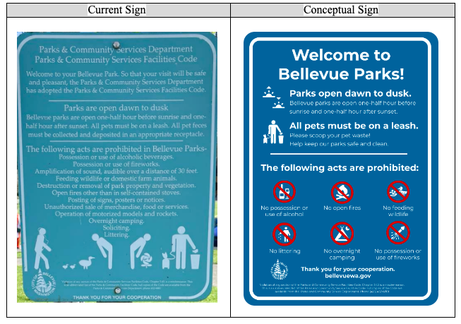
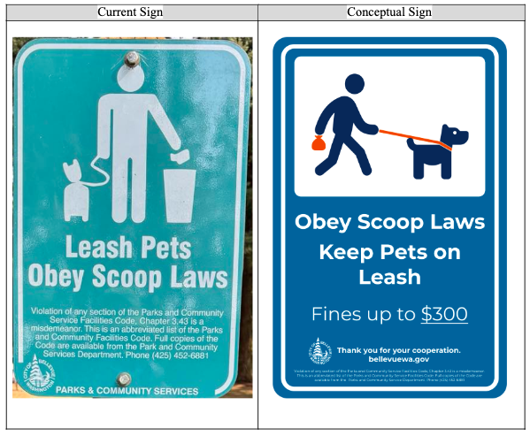
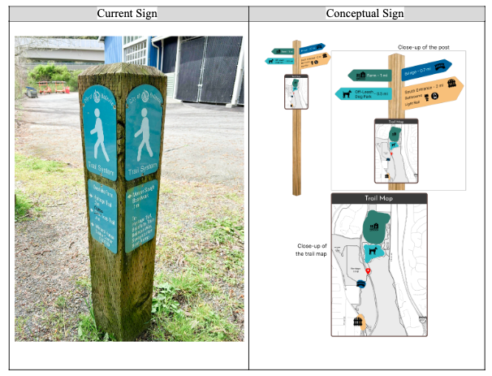
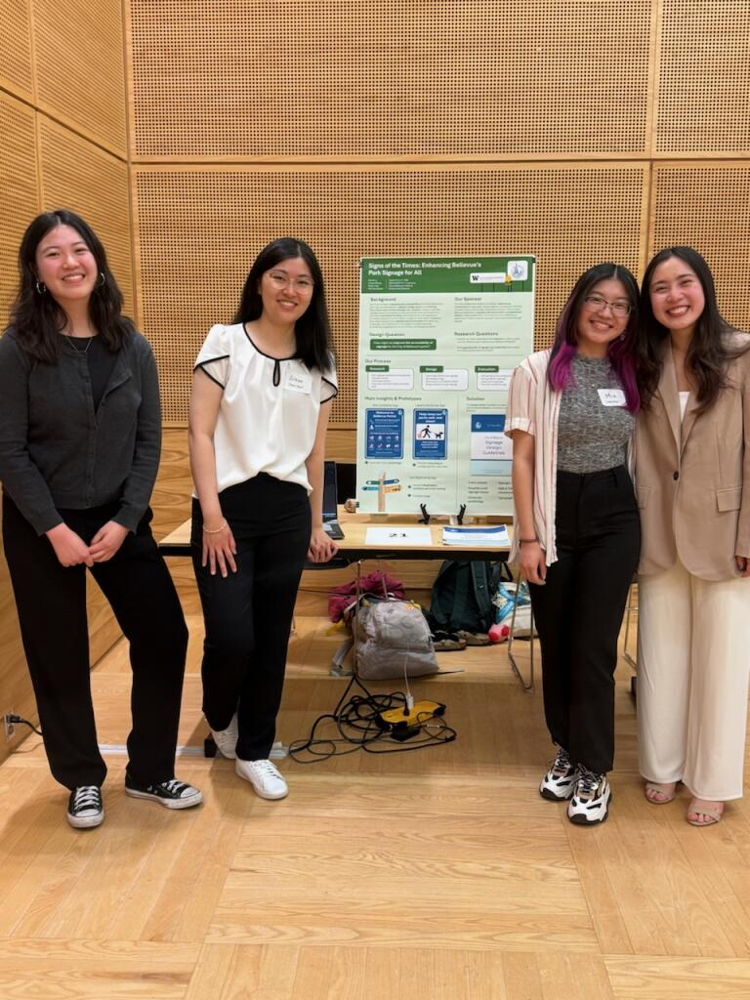
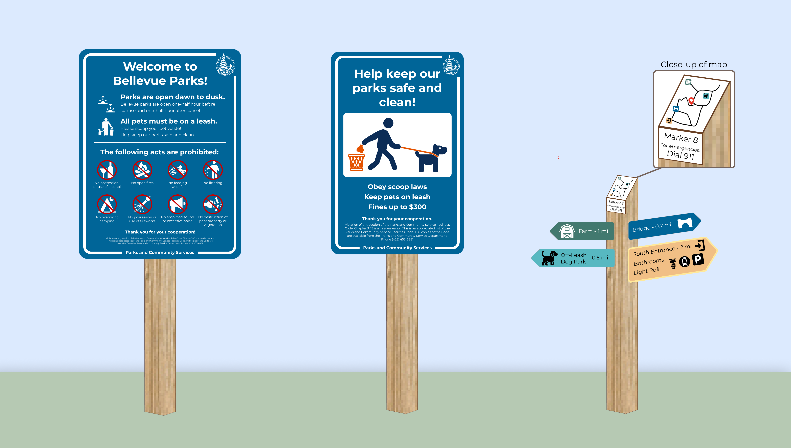
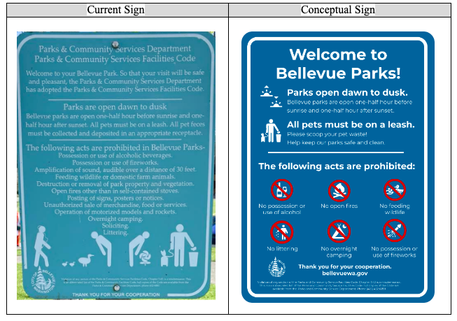
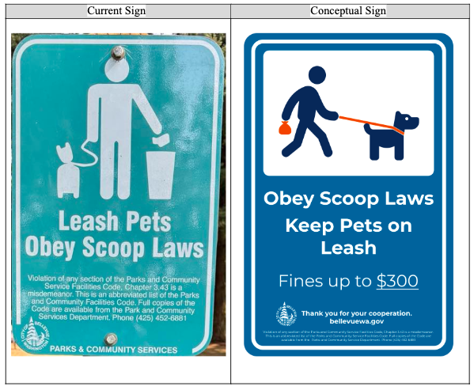
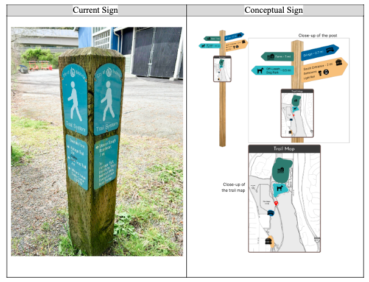
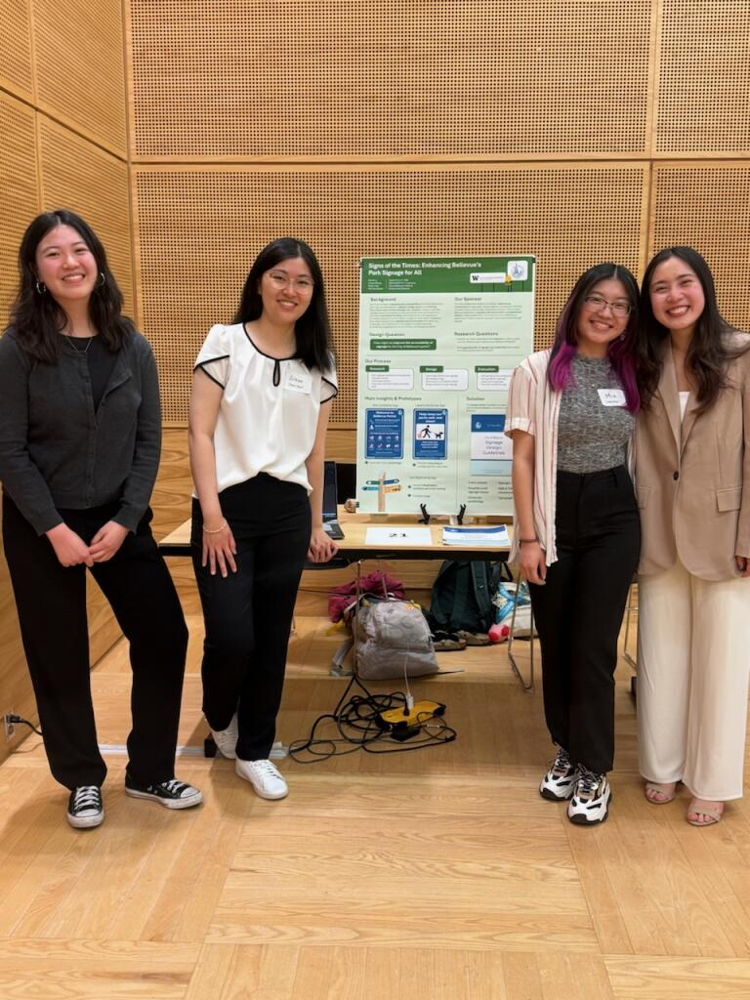

← back
Exisiting signs were text-heavy, poorly placed, and not frequently interacted with. Feedback indicated the need for clearer directions, trail difficulty markers, maps, and better use of symbology for language accessibility. Our initial redesigned park signage prototypes included using clear fonts, type hierarchy, clear color contrast, and consistent symbology. These initial designs were then compared to current park signage to better understand visitor preference and receive diverse feedback. Both the final redesigned park signage prototypes and overall research findings aim to define criteria and goals which can make City of Bellevue’s park signage more accessible, safe, and enjoyable for all visitors.
This project aims to evaluate the accessibility of current park signage and identified effective ways to improve signage accessibility. Our work was guided by the research question: How might we improve the accessibility of signage for the City of Bellevue?


Comparison of the Bellevue Parks pet rules sign versus our design.

Comparison of the Bellevue Parks wayfinding sign versus our design.

To view our capstone more in depth, please click the "Our Report" button at the top of this page.

City of Bellevue Signage Redesign üå≤
Assessment and redesign of the City of Bellevue's current signage system as part of our 2024 University of Washington HCDE Undergraduate Senior Capstone.
Topics
Service Design • UX Research • Signage • Design SystemsDuration
6 months, 1/2024 - 6/2024Type
UW HCDE Senior Capstone ProjectMy Roles
I was in charge of doing user interviews, working on the "Welcome to Bellevue Parks" sign, conducting qualitative analysis on interview and survey results, and doing part of the design system booklet. I also edited the video for our showcase.Context
Motivated by the desire to improve parks and other public facilities, our team decided to choose the City of Bellevue as our sponsor for this project. The City of Bellevue Parks and Community Services Department manages 2,700 acres of land – including an extensive network of 80 miles of trails. While the department provides language translation and interpretation as specified in Title VI of the Civil Rights Act, it is aiming to improve its signage and reassess its accessibility per Title VI and ADA standards.Exisiting signs were text-heavy, poorly placed, and not frequently interacted with. Feedback indicated the need for clearer directions, trail difficulty markers, maps, and better use of symbology for language accessibility. Our initial redesigned park signage prototypes included using clear fonts, type hierarchy, clear color contrast, and consistent symbology. These initial designs were then compared to current park signage to better understand visitor preference and receive diverse feedback. Both the final redesigned park signage prototypes and overall research findings aim to define criteria and goals which can make City of Bellevue’s park signage more accessible, safe, and enjoyable for all visitors.
This project aims to evaluate the accessibility of current park signage and identified effective ways to improve signage accessibility. Our work was guided by the research question: How might we improve the accessibility of signage for the City of Bellevue?
The Process
I worked on a team with 3 other HCDE undergraduate students. We created these final deliverables to present at the HCDE capstone showcase (my specific roles for this project are emphasized above).1. Project Poster
Here you can view the poster our team presented. You can see our redesigned signs here.2. Redesigned vs. Current Signs
Comparison of the Bellevue Parks rules sign versus our design.
Comparison of the Bellevue Parks pet rules sign versus our design.

Comparison of the Bellevue Parks wayfinding sign versus our design.

3. Video
View our video here. The existing Bellevue Parks signs are showcased and compared to our new sign designs in more detail.To view our capstone more in depth, please click the "Our Report" button at the top of this page.
Capstone Showcase
Our team presenting at the 2024 Human Centered Design and Engineering capstone showcase in the Husky Union Building (I'm on the left!).